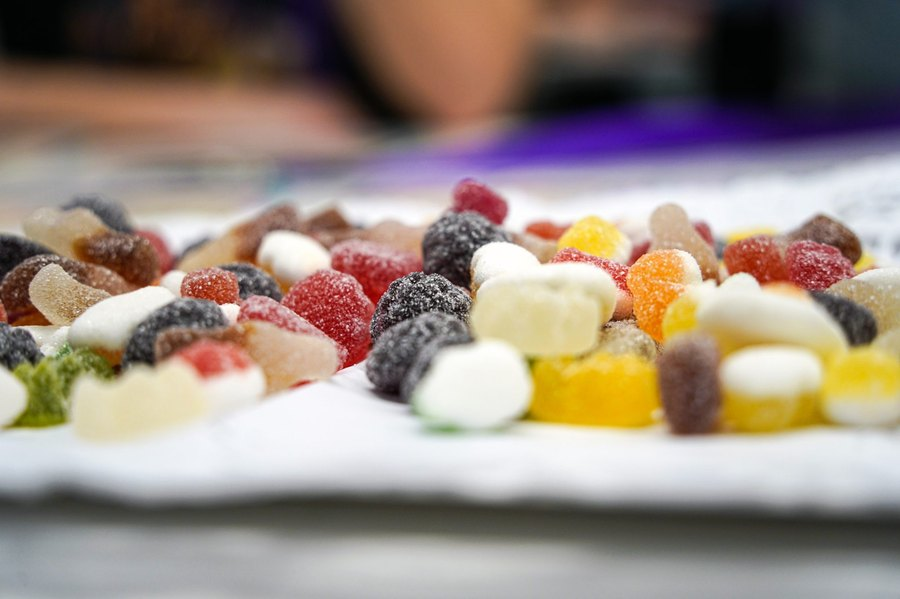

Gumitide vs JellyTide: Identical Formulas, Side by Side
One bottle is maroon and talks about weight management. The other is purple and talks about digestion and appetite. Turn them around and the backs say the same thing.

Key takeaways
- The Supplement Facts panels are identical. Both have a 525 mg apple cider vinegar and BHB blend, 8 calories and 2 g of sugar per gummy.
- Same other ingredients, same directions, same cautions. Even the order of the ingredient list matches.
- Same distributor: Instituto Experience of Lakeland, Florida, with the same customer service contact on both labels.
- Same published pack prices and the same 60-day money-back guarantee on official orders.
- The only real difference is branding. Pick by availability and guarantee terms, and never buy both.
Gumitide vs JellyTide isn't a real contest. Both labels list the same 525 mg blend of apple cider vinegar and BHB salts, the same 8 calories and 2 g of sugar, the same other ingredients and the same distributor. Published prices and the 60-day guarantee match too. The difference is branding, so choose by availability and refund terms.
We know that sounds too simple, so this page shows the evidence. We transcribed both labels, compared every line, and listed the few things that do differ. If you want each product on its own, our Gumitide review and JellyTide review cover them separately.

Gumitide: check today's price
An apple cider vinegar and BHB gummy, one a day, 8 calories each. Sold only on the official site, with a 60-day money-back guarantee.
See the official price →Are Gumitide and JellyTide the same product?
On every point a label can show, yes. Same serving size, same blend, same nutrition numbers, same ingredient list, same suggested use, same warning text, same distributor, same phone number and email for customer service. We can't see inside the factory, so we won't claim they come off the same production line. But a buyer comparing the two bottles has nothing on the back to choose between.
Selling one formula under more than one brand name is common in online supplements. It lets a seller run different ad messages to different audiences. That's not illegal and doesn't make either product unsafe. It does mean that any claim one brand is "stronger" or "newer" than the other isn't backed by the label.
You can run this check yourself on any pair of gummies that look suspiciously alike. Photograph both Supplement Facts panels and compare four things: the serving weight, the blend total, the mineral and sugar lines, and the distributor's name and address. When all four match, the bottles are telling you they're the same product, whatever the front says. It takes two minutes and can save you from paying twice for one formula.
How do the Gumitide and JellyTide labels compare?
Here are both Supplement Facts panels, line by line, as printed on the bottles.
| Label line | Gumitide | JellyTide |
|---|---|---|
| Serving size | 1 gummy (2.5 g) | 1 gummy (2.5 g) |
| Servings per container | 30 | 30 |
| Calories | 8 | 8 |
| Total carbohydrates | 2 g (1% DV) | 2 g (1% DV) |
| Total sugars | 2 g, incl. 1 g added | 2 g, incl. 1 g added |
| Sodium / calcium / magnesium | 2.5 mg / 1 mg / 0.75 mg | 2.5 mg / 1 mg / 0.75 mg |
| Proprietary blend | 525 mg: apple cider vinegar, BHB (calcium, magnesium, sodium beta-hydroxybutyrate) | 525 mg: apple cider vinegar, BHB (calcium, magnesium, sodium beta-hydroxybutyrate) |
| Other ingredients | Corn syrup, purified water, pure cane sugar, apple pectin, citric acid, sodium citrate, tapioca starch, natural flavors, beet root powder | Same list, same order |
| Suggested use | 1 gummy daily, about 30 minutes before morning or afternoon meal, with a full glass of water | Identical wording |
| Distributor | Instituto Experience, Lakeland, FL | Instituto Experience, Lakeland, FL |
| Made in | USA, with globally sourced ingredients | USA, with globally sourced ingredients |
One wording detail: Gumitide's label says "distributed for" Instituto Experience, and JellyTide's says "distributed by." Both name the same company, address, phone and email. We wouldn't read anything into it for your purchase.
What's actually different between them?
Only what's on the outside. Gumitide uses a deep maroon bottle with the tagline "Weight Management Support" and badges for appetite control, fat metabolism and weight management. JellyTide uses a purple design and leads with three slightly different claims: promotes fat metabolism, supports healthy digestion and promotes appetite control.

Notice that "digestion" appears on JellyTide's front but not on Gumitide's. The gummy inside didn't change to earn that badge. There are no enzymes, probiotics or added fiber in either. It's a marketing choice, aimed at a reader who cares more about bloating and hunger than about the scale.
Each brand also has its own official order page and website. That's the practical difference that matters most, and we'll come back to it below.
Does one work better than the other?
No. With identical panels, there's no reason to expect any difference in effect. What matters is whether the shared formula does much at all, and the honest answer is: not by itself.
The vinegar studies people cite gave 15 to 30 ml of liquid vinegar a day, roughly 750 to 1,500 mg of acetic acid. Both gummies hold a 525 mg blend shared with BHB, so they can't reach that. BHB salts briefly raise blood ketones, but they don't put you in ketosis or make your body burn its own fat. The tiny mineral numbers on both labels also suggest a small BHB portion. We go deeper in does Gumitide work, which covers the vinegar and ketone dose math, and does JellyTide work, which focuses on appetite and digestion. The findings apply equally to both brands.
Where either can help is as a routine. A gummy and a glass of water half an hour before a meal is a small cue to slow down. Diet, activity and sleep are what change body weight.
If you try one, give it a fair test. Weigh yourself each morning for a week first and average the numbers. Take the gummy before the same meal every day. Note how hungry you are at that meal. Then compare weekly averages around week six, which leaves time to use the guarantee if nothing has changed. Running that test on Gumitide and then on JellyTide would just repeat the same experiment twice.
Gumitide vs JellyTide price: which is cheaper?
At the time of writing, both official order pages publish the same three packs. Check each page for the current figure before buying, since prices can change without notice.
| Pack | Gumitide | JellyTide | Cost per day |
|---|---|---|---|
| 2 bottles | $79 each, $158 + $9.99 shipping | $79 each, $158 + $9.99 shipping | About $2.63, plus shipping |
| 3 bottles | $69 each, $207, free US shipping | $69 each, $207, free US shipping | About $2.30 |
| 6 bottles | $49 each, $294, free US shipping | $49 each, $294, free US shipping | About $1.63 |
 2 Bottles · Starter
$79/bottle
Check Availability →
+ $9.99 shipping
6 Bottles · Best Value
$49/bottle
Claim Discount →
Free US Shipping
3 Bottles · Popular
$69/bottle
Claim Discount →
Free US Shipping
2 Bottles · Starter
$79/bottle
Check Availability →
+ $9.99 shipping
6 Bottles · Best Value
$49/bottle
Claim Discount →
Free US Shipping
3 Bottles · Popular
$69/bottle
Claim Discount →
Free US Shipping
Prices shown are the manufacturer's published rates at the time of writing and can change without notice.
The cards above show Gumitide's packs, since this page links to Gumitide. JellyTide's packs carry the same prices. All of them are one-time charges with no subscription, and one bottle lasts 30 days at one gummy a day.
Since the price is the same, the only way one is "cheaper" is if a page runs a different offer on the day you check. That's worth a quick look at both, but it's not worth paying extra for either name.
Do Gumitide and JellyTide have the same guarantee?
Both offer a 60-day money-back guarantee on orders through their official checkout. The guarantee is tied to where you bought, though, not to the formula. A Gumitide refund goes through Gumitide's order channel, and a JellyTide refund through JellyTide's. Don't expect to return one brand through the other's support.
Before buying either, read the refund steps on that brand's order page and save the confirmation email. Bottles from Amazon, eBay, Walmart or other third-party sellers aren't covered by the official guarantee, whichever name is on them.
Timing matters with either brand. Sixty days goes by faster than it sounds once you allow for shipping. Start the gummies the day they arrive, put a reminder in your phone for around day 45, and decide then. If you're unsure, ask for the refund inside the window rather than after it. A guarantee you forget to use is worth nothing, and that's true whichever of these two bottles is sitting on your counter.
Gumitide or JellyTide: which should you choose?
It doesn't matter for your health. It can matter a little for your wallet and your peace of mind. Here's how we'd decide.
- Pick whichever official page you can actually order from today. If one is out of stock or won't ship to you, take the other.
- Compare the guarantee wording on both pages. If one is clearer about how to request a refund, that's a reason to prefer it.
- Check that you're on the real site. Lookalike pages use both names. Look at the address bar before paying.
- If you already have one, don't buy the other. It's the same gummy. Switching brands won't change your results.
- Never take both at once. That just doubles the sugar and the same blend, beyond what the label recommends.
Brand messaging might nudge you, and that's fine. If you think of the gummy as a weight-management habit, Gumitide's packaging fits that. If appetite before meals is your sticking point, JellyTide's does. Just know you're choosing a label design, not a formula.
What about other apple cider vinegar and BHB gummies?
The same logic applies across the aisle. Dozens of ACV and keto gummies are sold under different names, many with near-identical panels. When you compare any of them, look past the front of the bottle.
- Is each dose printed? A blend total without a split means you can't check either ingredient against research.
- How much sugar per gummy? Some products use two or three gummies a serving, which adds up.
- Who's the distributor? A named company with an address and phone number is the minimum.
- What's the refund policy, and who honors it? A guarantee is only as good as the channel that processes it.
No ACV gummy we know of delivers the vinegar dose used in the main weight trial at its labeled serving. So the decision usually comes down to sugar, price per day and refund terms. On those, Gumitide and JellyTide tie.
Who should skip both?
Because the formula is shared, so is the list of people who should check with a doctor first or pass altogether. Both labels ask anyone under a physician's care, taking medication, pregnant or nursing, or with a known medical condition to consult a professional before use. In practice, that means:
- People on diabetes medication or insulin, since vinegar is studied for after-meal glucose.
- People with gastroparesis, because vinegar can slow stomach emptying.
- People taking diuretics or heart drugs such as digoxin, where potassium levels matter.
- Anyone expecting weight loss from the gummy alone. Neither product is built to deliver it.
- Children. Both are adult supplements that look like candy.
If you're watching sugar closely, 2 g a gummy is small but real. Our page on how sugar affects energy and focus explains why steady meals matter more than any single product.
Gumitide vs JellyTide: pros and cons
| Gumitide | JellyTide | |
|---|---|---|
| Formula | 525 mg ACV and BHB blend; split undisclosed | Identical |
| Front-label message | Weight management, appetite, fat metabolism | Fat metabolism, digestion, appetite |
| Evidence on the finished product | None published | None published |
| Published price | $49 to $79 a bottle depending on pack | Same |
| Guarantee | 60 days on official orders | 60 days on official orders |
| Best reason to pick it | Its order page is available to you and its refund terms read clearly | Same reasons |
Our verdict on Gumitide vs JellyTide
These are two names for one gummy. The formulas match line for line, the distributor is the same, and the published prices and guarantee are the same. Anyone telling you one is the upgraded or more effective version is selling, not comparing.
If you've decided you want an apple cider vinegar and BHB gummy as a pre-meal habit, buy whichever is easier to get from the official page, with the guarantee terms you're most comfortable with. Start with a small pack. Pair it with the changes that actually move weight, like more protein and fiber, fewer sweet drinks and a daily walk. Our energy and metabolism hub has more on those.
Gumitide: check today's price
An apple cider vinegar and BHB gummy, one a day, 8 calories each. Sold only on the official site, with a 60-day money-back guarantee.
See the official price →Frequently asked questions
Is JellyTide just Gumitide with a different name?
Based on the labels, yes. Both list the same 525 mg apple cider vinegar and BHB blend, the same nutrition numbers, the same other ingredients and the same distributor. Only the packaging and front-label claims differ.
Can I switch from Gumitide to JellyTide if one runs out?
Yes. Since the panels are identical, switching brands is like opening a new bottle of the same product. Keep to one gummy a day as the label directs.
Why does JellyTide mention digestion and Gumitide doesn't?
It's a difference in marketing, not formula. Neither gummy contains enzymes, probiotics or added fiber. The digestion badge reflects how the brand chose to position the product.
Is one of them on Amazon?
Both are sold through their own official order pages. You may find marketplace listings for either name, but those aren't covered by the official 60-day guarantee.
Do Gumitide and JellyTide taste different?
The labels list the same flavorings, sweeteners and beet root powder for color, so we'd expect them to taste the same. We haven't seen any label difference that would change taste.
Are there other gummies with the same formula?
Apple cider vinegar and BHB gummies are sold under many names. Compare the Supplement Facts panel, not the brand, and look for the blend size, sugar per gummy and the distributor's name.
Can I get a refund from Gumitide for a JellyTide order?
No. Each guarantee is handled through the brand and official checkout you bought from. Request a refund through the same channel you used to order.
Decided on Gumitide?
Same formula as JellyTide, one gummy a day, with a 60-day money-back guarantee on official orders. Check the current pack prices on the official page.
See Gumitide's official price →Related: Gumitide review · JellyTide review · Does Gumitide work? · Does JellyTide work? · Sugar and brain fog